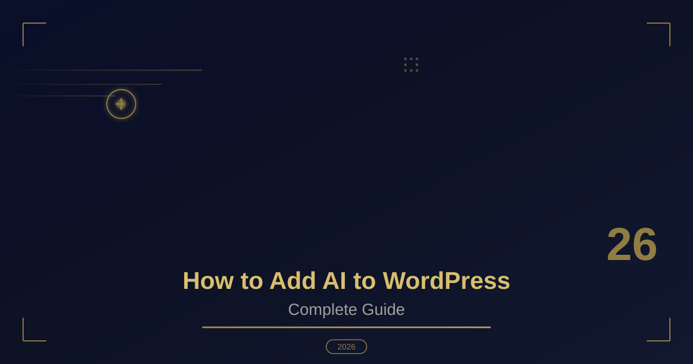

How to Add AI to WordPress: Complete Guide 2026
Table of Contents
Hello, fellow developers! I am Shiv Parmar, a WordPress developer with global experience. Artificial Intelligence has transformed how we build and manage websites. In 2026, AI integration in WordPress is no longer optional—it is essential for staying competitive. In this guide, I will show you exactly how to add AI to your WordPress website with practical code examples.
Whether you want to add a smart chatbot, automate content generation, or create personalized user experiences, this guide covers everything you need to know about WordPress AI integration.
Why Add AI to WordPress in 2026?
AI is not just a buzzword anymore. It provides real, measurable benefits for WordPress websites:
- Content Creation: Generate blog posts, product descriptions, and metadata automatically using AI APIs
- Customer Support: AI chatbots handle 80% of routine questions, reducing support costs significantly
- SEO Optimization: AI analyzes content and suggests improvements for better search rankings
- Personalization: Deliver custom content to users based on their behavior and preferences
- Security: AI detects and prevents malicious attacks in real-time
Pro Tip: The most successful WordPress AI implementations solve specific user problems, not just add fancy features. Focus on what your users actually need.
Method 1: Add AI Chatbot to WordPress
The most popular AI integration is adding a chatbot. Here is how to build a custom AI chatbot using OpenAI API in WordPress:
Step 1: Create Chatbot Plugin File
<?php
/**
* Plugin Name: AI Chatbot for WordPress
* Description: Custom AI chatbot using OpenAI API
* Version: 1.0
* Author: Shiv Parmar
*/
// Prevent direct access
if (!defined('ABSPATH')) {
exit;
}
class Shiv_AI_Chatbot {
private $api_key;
public function __construct() {
$this->api_key = get_option('shiv_ai_api_key');
add_action('wp_enqueue_scripts', array($this, 'enqueue_scripts'));
add_action('wp_ajax_shiv_ai_chat', array($this, 'handle_chat'));
add_action('wp_ajax_nopriv_shiv_ai_chat', array($this, 'handle_chat'));
}
public function enqueue_scripts() {
wp_enqueue_style('shiv-chatbot', plugin_dir_url(__FILE__) . 'css/chatbot.css');
wp_enqueue_script('shiv-chatbot', plugin_dir_url(__FILE__) . 'js/chatbot.js', array('jquery'), '1.0', true);
wp_localize_script('shiv-chatbot', 'shivAI', array(
'ajaxurl' => admin_url('admin-ajax.php'),
'nonce' => wp_create_nonce('shiv_ai_nonce')
));
}
public function handle_chat() {
check_ajax_referer('shiv_ai_nonce', 'nonce');
$user_message = sanitize_text_field($_POST['message']);
$response = wp_remote_post('https://api.openai.com/v1/chat/completions', array(
'headers' => array(
'Authorization' => 'Bearer ' . $this->api_key,
'Content-Type' => 'application/json'
),
'body' => json_encode(array(
'model' => 'gpt-3.5-turbo',
'messages' => array(
array('role' => 'system', 'content' => 'You are a helpful WordPress assistant.'),
array('role' => 'user', 'content' => $user_message)
),
'max_tokens' => 150
))
));
if (!is_wp_error($response)) {
$body = json_decode(wp_remote_retrieve_body($response), true);
wp_send_json_success($body['choices'][0]['message']['content']);
} else {
wp_send_json_error('Sorry, AI service is temporarily unavailable.');
}
}
}
new Shiv_AI_Chatbot();
Step 2: Create Chatbot Frontend (JavaScript)
// js/chatbot.js
jQuery(document).ready(function($) {
// Toggle chat window
$('#shiv-chat-toggle').click(function() {
$('#shiv-chat-window').toggleClass('active');
});
// Send message
$('#shiv-chat-send').click(function() {
sendMessage();
});
// Send on Enter key
$('#shiv-chat-input').keypress(function(e) {
if (e.which == 13) sendMessage();
});
function sendMessage() {
var message = $('#shiv-chat-input').val().trim();
if (!message) return;
// Add user message to chat
addMessage(message, 'user');
$('#shiv-chat-input').val('');
// Show typing indicator
addMessage('Typing...', 'bot typing');
// Send to WordPress AJAX
$.post(shivAI.ajaxurl, {
action: 'shiv_ai_chat',
nonce: shivAI.nonce,
message: message
}, function(response) {
// Remove typing indicator
$('.typing').remove();
if (response.success) {
addMessage(response.data, 'bot');
} else {
addMessage('Sorry, something went wrong.', 'bot');
}
});
}
function addMessage(text, type) {
var html = '<div class="shiv-chat-message ' + type + '">' + text + '</div>';
$('#shiv-chat-messages').append(html);
$('#shiv-chat-messages').scrollTop($('#shiv-chat-messages')[0].scrollHeight);
}
});
Method 2: AI Content Generation API
Integrate AI content generation directly into your WordPress editor. This allows you to generate blog posts, product descriptions, and meta content with one click:
<?php
/**
* Add AI content generation to Gutenberg editor
*/
function shiv_ai_content_generation_block() {
wp_register_script(
'shiv-ai-generator',
plugins_url('js/ai-generator.js', __FILE__),
array('wp-blocks', 'wp-element', 'wp-components'),
'1.0.0'
);
register_block_type('shiv/ai-generator', array(
'editor_script' => 'shiv-ai-generator',
'render_callback' => 'shiv_ai_generator_render'
));
}
add_action('init', 'shiv_ai_content_generation_block');
function shiv_ai_generator_render($attributes) {
return sprintf(
'<div class="shiv-ai-generator" data-prompt="%s"></div>',
esc_attr($attributes['prompt'] ?? '')
);
}
Method 3: AI-Powered Product Recommendations
For WooCommerce stores, AI-powered product recommendations can increase sales by 30% or more. Here is how to implement it:
<?php
/**
* AI Product Recommendations for WooCommerce
*/
function shiv_ai_product_recommendations($product_id) {
$api_key = get_option('shiv_ai_api_key');
// Get current product details
$product = wc_get_product($product_id);
$category = wp_get_post_terms($product_id, 'product_cat');
// Build AI prompt
$prompt = sprintf(
'Recommend 3 similar products to "%s" in category "%s". Product ID: %d',
$product->get_name(),
$category[0]->name ?? 'General',
$product_id
);
// Call OpenAI API
$response = wp_remote_post('https://api.openai.com/v1/chat/completions', array(
'headers' => array(
'Authorization' => 'Bearer ' . $api_key,
'Content-Type' => 'application/json'
),
'body' => json_encode(array(
'model' => 'gpt-3.5-turbo',
'messages' => array(
array('role' => 'user', 'content' => $prompt)
),
'max_tokens' => 200
))
));
if (!is_wp_error($response)) {
$body = json_decode(wp_remote_retrieve_body($response), true);
return $body['choices'][0]['message']['content'];
}
return false;
}
Best Practices for WordPress AI Integration
- API Key Security: Never hardcode API keys in theme files. Use WordPress options API or environment variables
- Error Handling: Always implement fallback mechanisms when AI API fails or times out
- Caching: Cache AI responses to reduce API costs and improve page load speed
- Rate Limiting: Implement rate limiting to prevent API abuse and unexpected charges
- User Privacy: Inform users when they are interacting with AI, and handle data according to GDPR
Common Mistakes to Avoid
- Over-relying on AI: AI should assist humans, not replace them entirely
- Ignoring costs: AI API calls can become expensive at scale—monitor usage closely
- Poor testing: Test AI features thoroughly before deploying to production
- No fallback: Always have a manual backup option when AI fails
Conclusion
Adding AI to WordPress in 2026 is easier than ever with the available APIs and tools. Whether you choose to build a chatbot, automate content generation, or add smart recommendations, the key is to start small and iterate based on user feedback. Focus on solving real problems, not just adding AI for the sake of it.
Need help implementing AI on your WordPress site? I specialize in custom WordPress development with AI integration. Let's build something amazing together.